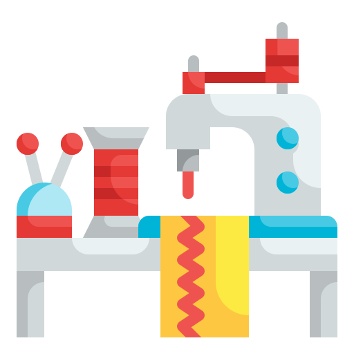
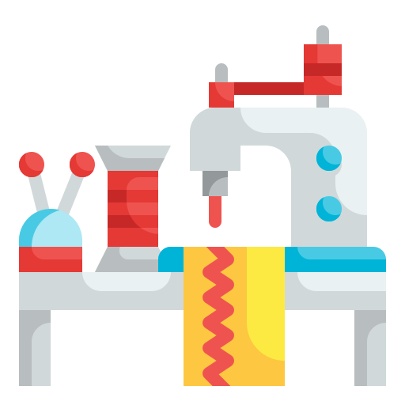

Aportes
Durante mi voluntariado, apoyé en el club extracurricular de Ping Pong  y ocasionalmente en el Taller de Costura . En el club, organicé torneos y actividades lúdicas que fomentaron la disciplina, el respeto y el espíritu deportivo entre los beneficiarios. En el taller, asistí en la preparación de materiales y acompañé a los jóvenes en el desarrollo de habilidades manuales, lo cual reforzó su autoestima y sentido de logro.
y ocasionalmente en el Taller de Costura . En el club, organicé torneos y actividades lúdicas que fomentaron la disciplina, el respeto y el espíritu deportivo entre los beneficiarios. En el taller, asistí en la preparación de materiales y acompañé a los jóvenes en el desarrollo de habilidades manuales, lo cual reforzó su autoestima y sentido de logro.
 Club de Ping Pong
Club de Ping Pong
En el club extracurricular de Ping Pong, colaboré activamente en la planificación y desarrollo de las sesiones semanales. Mi principal aporte fue mantener la dinámica del grupo, organizando pequeños torneos y juegos que promovieran tanto la competencia sana como el compañerismo. Trabajé con niños y adolescentes de diferentes edades, lo que me obligó a adaptar las reglas y la metodología según sus niveles de habilidad y madurez. Para mantener el orden y el enfoque, establecí horarios, límites y normas claras, aprendiendo a comunicarme de forma asertiva con el grupo. Esta actividad no solo fomentó el desarrollo físico y social de los beneficiarios, sino que también sirvió como un espacio seguro de recreación, fortaleciendo sus habilidades cognitivas y emocionales
Asistencia en taller de costura
Cuando no había sesiones del club por las tardes, apoyé en el Taller de Costura, un espacio dirigido a madres de familia que trabajan en la elaboración de productos textiles para obtener un ingreso adicional. Aunque mi participación fue puntual y en tareas sencillas, como cortar y doblar planchas de tela, pude conocer de cerca el esfuerzo diario de estas mujeres y el valor del trabajo colaborativo. Este acompañamiento me permitió desarrollar habilidades como la observación, el respeto por el trabajo manual y la disposición para ayudar sin importar la complejidad de la tarea. El taller tiene un impacto directo en la economía de los hogares, ayudando a combatir la inseguridad alimentaria mediante ingresos estables. Ser parte de este proceso, aunque en una pequeña medida, me permitió comprender la importancia de apoyar desde cualquier rol.